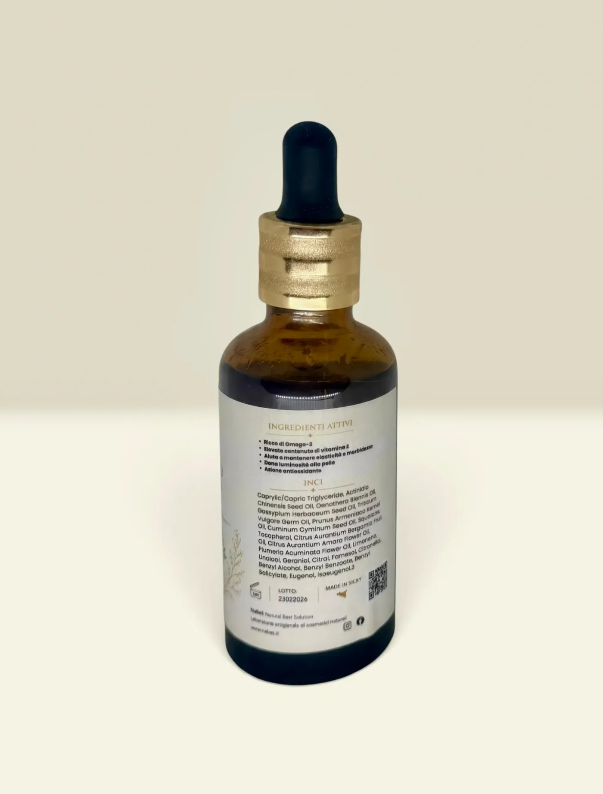
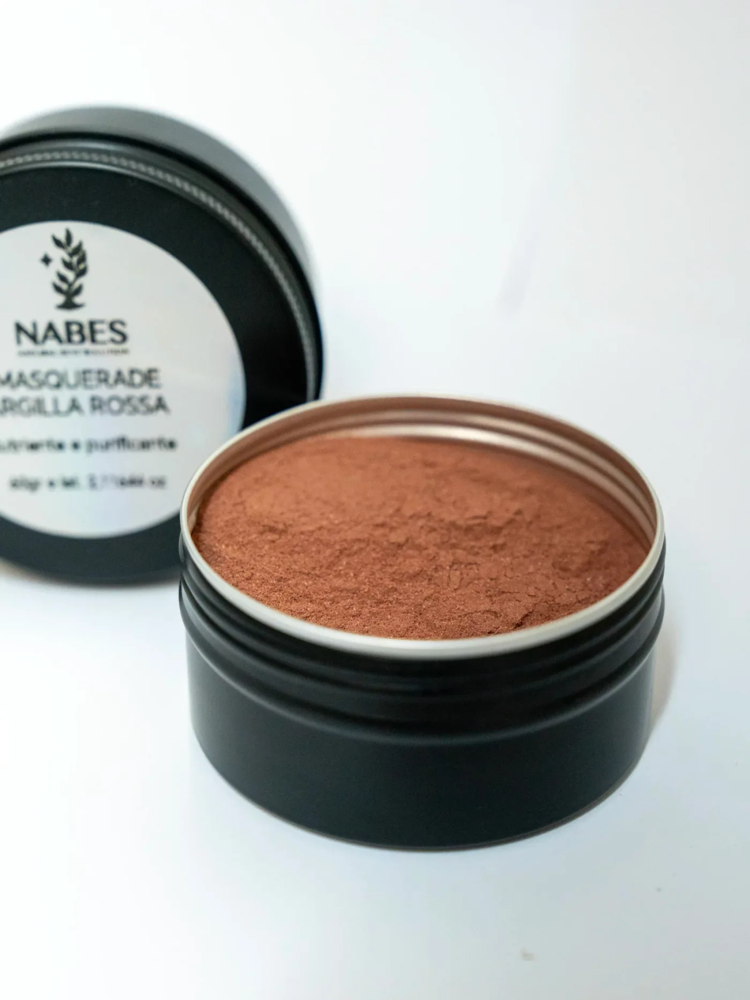
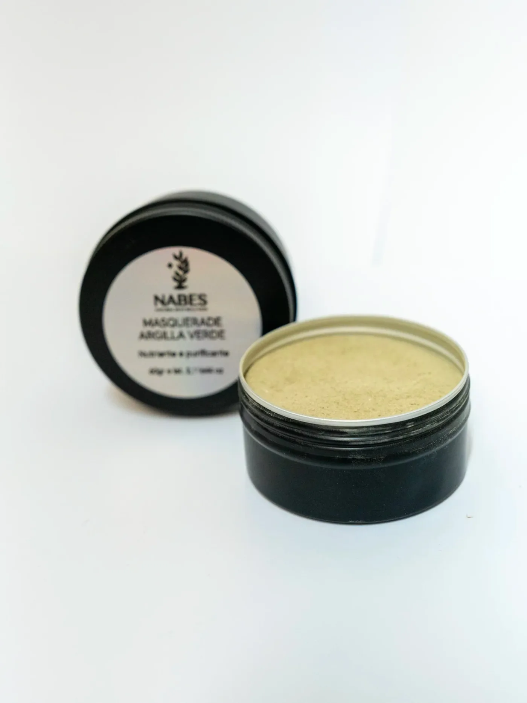

Viso · NAB023
Olio-Siero Viso e Collo
al kiwi
Olio al Kiwi è un trattamento naturale nutriente e idratante per viso e corpo, ideale dopo l’esposizione al sole.
La sua formula leggera a base di oli vegetali e antiossidanti aiuta a ripristinare l’idratazione, migliorare l’elasticità della pelle e donare un aspetto sano e luminoso.
Un gesto semplice di cura quotidiana che unisce efficacia e piacere sensoriale.
La formula
- Olio di Semi di Kiwi
- illuminante e antiossidante
- Olio di Enotera
- elasticizzante e riequilibrante
- Olio di Albicocca
- nutriente e addolcente
- Olio di Germe di Grano
- protettivo e ricco di vitamina E
- Squalane
- emolliente e idratante
- Vitamina E
- protezione antiossidante
- Neroli, Bergamotto e Frangipani
- lenitivi e aromatici
INCI completo
Caprylic/Capric Triglyceride, Actinidia Chinensis Seed Oil, Oenothera Biennis Oil, Gossypium Herbaceum Seed Oil, Triticum Vulgare Germ Oil, Prunus Armeniaca Kernel Oil, Cuminum Cyminum Seed Oil, Squalane, Tocopherol, Citrus Aurantium Bergamia Fruit Oil, Citrus Aurantium Amara Flower Oil, Plumeria Acuminata Flower Oil, Limonene, Linalool, Geraniol, Citral, Farnesol, Citronellol, Benzyl Alcohol, Benzyl Benzoate, Benzyl Salicylate, Eugenol, Isoeugenol.
Descrizione breve
Olio al Kiwi è un trattamento naturale nutriente e idratante per viso e corpo, ideale dopo l’esposizione al sole.
La sua formula leggera a base di oli vegetali e antiossidanti aiuta a ripristinare l’idratazione, migliorare l’elasticità della pelle e donare un aspetto sano e luminoso.
- Un gesto semplice di cura quotidiana che unisce efficacia e piacere sensoriale.
Benefici principali
- Idrata e nutre in profondità
- Aiuta a ripristinare la pelle dopo il sole
- Migliora elasticità e morbidezza cutanea
- Azione antiossidante e protettiva
- Texture leggera, facilmente assorbibile
- Profumazione naturale, fresca e delicata
Modo d’uso
Applicare su pelle pulita, preferibilmente leggermente umida, massaggiando delicatamente fino a completo assorbimento.
- Ideale dopo l’esposizione al sole e per l’uso quotidiano su viso e corpo.
Avvertenze
Caprylic/Capric Triglyceride, Actinidia Chinensis Seed Oil, Oenothera Biennis Oil, Gossypium Herbaceum Seed Oil, Triticum Vulgare Germ Oil, Prunus Armeniaca Kernel Oil, Cuminum Cyminum Seed Oil, Squalane, Tocopherol, Citrus Aurantium Bergamia Fruit Oil, Citrus Aurantium Amara Flower Oil, Plumeria Acuminata Flower Oil, Limonene, Linalool, Geraniol, Citral, Farnesol, Citronellol, Benzyl Alcohol, Benzyl Benzoate, Benzyl Salicylate, Eugenol, Isoeugenol.
- Uso esterno
- Evitare il contatto con occhi e mucose
- In caso di irritazione, sospendere l’uso
- Conservare in luogo fresco e asciutto
- Tenere fuori dalla portata dei bambini
- INCI
Informazioni prodotto
- Linea: NABES
- Tipo: Olio viso & corpo
- Formato: Bottiglia contagocce
- Contenuto: 50 ml
- Metodo di produzione: Formulazione a freddo
- PAO: 12 mesi
- Produzione: Artigianale – Made in Italy
Continua
Altri della stessa linea

VisoMasquerade
Maschera viso · argilla rossa
Argilla Rossa & Bianca (Kaolin) · Alghe (Ascophyllum / Laminaria) · Ibisco & Mirtillo

VisoMasquerade
Maschera viso · argilla verde
Argilla Verde (Illite) · Alghe (Ascophyllum / Laminaria) · Avena & Riso